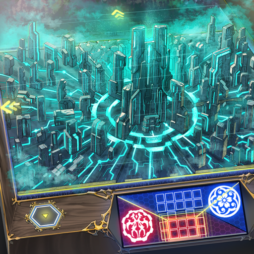
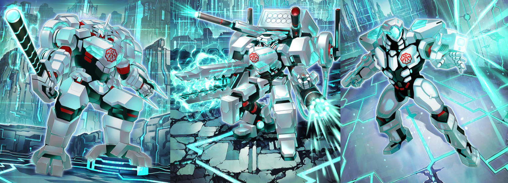
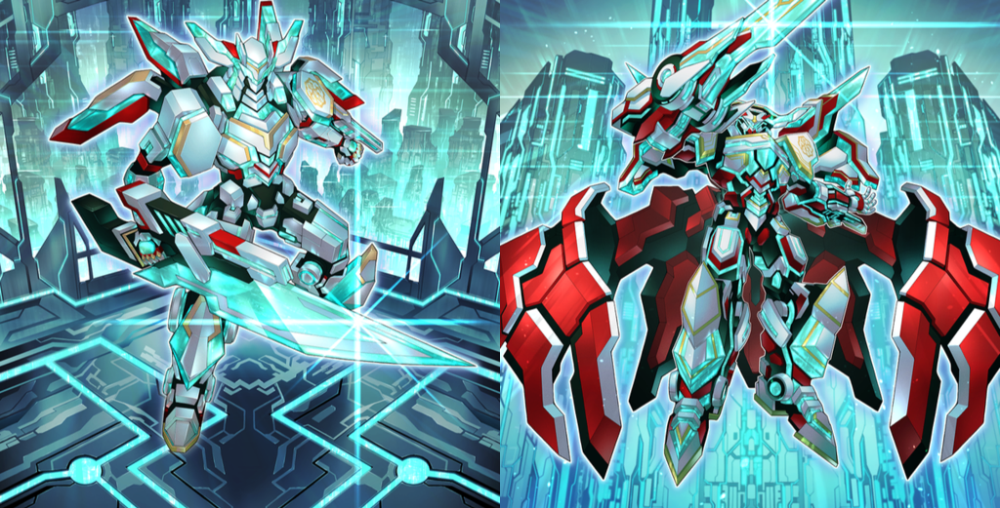
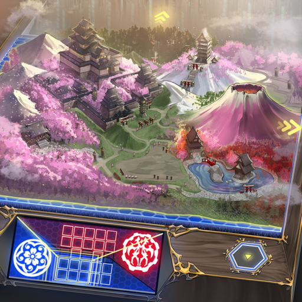
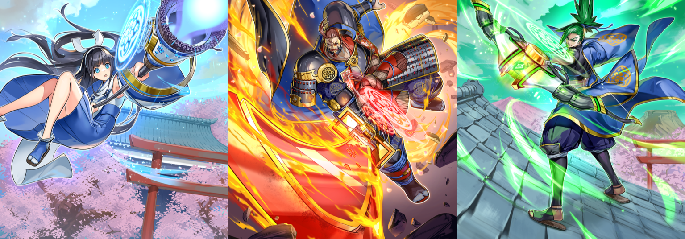
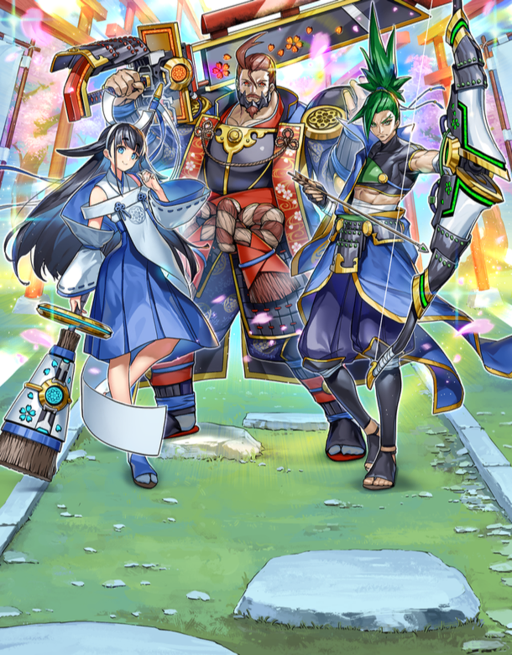
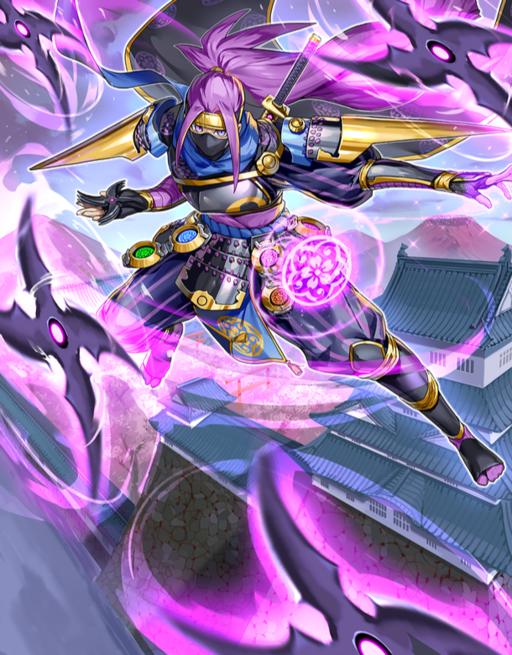
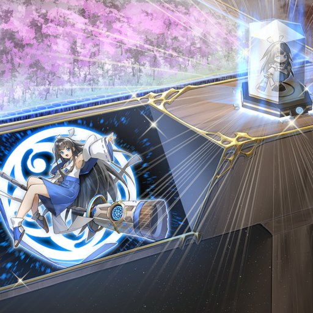
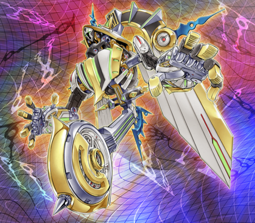
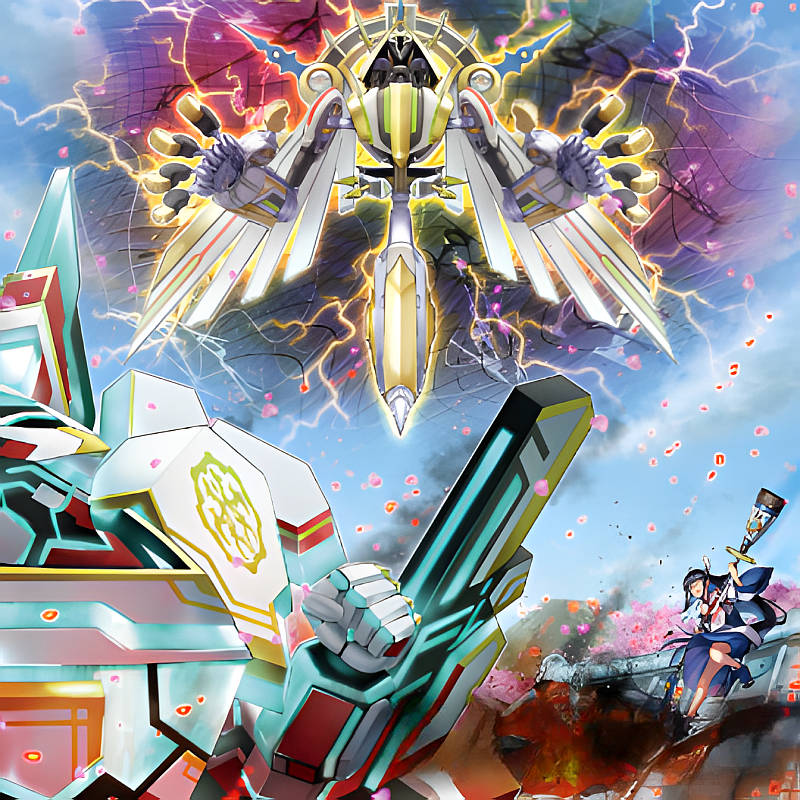

Strategy: High Attack Power with the Most Modern Weapons A world where technology has developed far beyond our reality: "Konig Wissen", a strictly-regulated nation where the lives of its people are monitored by high-spec A.I.. Following the established lore, where the nation spends most of its resources in its military budget, the units affiliated to this clan are armed with near-futuristic weapons, and their main characteristic is that even single units can output massive firepower. The opening strategy is to gain control of the board early with the low-cost "Baron", and at the critical timing, send in "Viscount" to gain control of even more territory. By keeping "Duke" in the rear, you can eventually rank it up into "Grand Duke" and quickly reverse the state of the front lines. Exterminate your enemies with your overwhelming attack power.

Fulfill the requirements and class-up! Can be placed on the field by ranking up a "Duke" that has acquired enough points by destroying units and protecting territory. Use "Marquess" to mob and defeat enemies to fulfill these requirements faster.


Unique Strategy: Fight by Adapting to Every Situation with the Power of Magic "Shinra Bansho", a stage set in a far east-themed world filled with mysterious powers. Unlike "Konig Wissen", the clans living there are free-spirited, and their units possess unique abilities. Overall, their firepower is weaker than that of "Konig Wissen", but interfering with the advancement of units and using the effects of their magical weapons to create breakthrough points that reverse the power imbalance during battle is where "Shinra Bansho" actually shines. Furthermore, since each of them have their own unique powers, they can create combos that cover for each other's weaknesses, and can perform group attacks that more than double their output. How fast you can get the currently strongest unit, "Mamonaka", on the field is going to be the main factor for obtaining victory.
With this 3-unit combo, create the strongest unit!! Although 3 units are required as a cost, it boasts overwhelming stats, and its ability can remove units from the battlefield.


Make a fool of your opponent with shape-shifting ninjutsu! Being able to change the positions of units with the power of ninjutsu lets you disturb your opponent's formation and create new openings. This ability can even be used on your own units.

Amazing Cutscenes! The Integration of Cutting-Edge Technologies in This Game By reading the data in the special cases, the unit is projected in the monitor, and you can enjoy various cutscenes with 'glow' and 'sound' gimmicks. It's also possible to customize them to your liking!

It's finally here! The 3rd faction is scheduled to arrive in the next few days!! In the first expansion set of "Vaylantz War", the 3rd faction is already making its appearance! In this issue, we reveal what the boss of that clan looks like. This new clan that can manipulate time and vectors is set to debut with 12 units. Further details will be revealed exclusively in this magazine!

